Aplicacion escritorio(WinForm)
Aplicación de escritorio (WinForms) para la gestión de artículos, implementando operaciones CRUD (Crear, Leer, Actualizar, Eliminar) con conexión a una base de datos SQL Server. Desarrollado como proyecto final del curso de .NET + SQL
 

Portal Digitalers
Trabajo realizado durante el cursado de Digitalers - Telecom